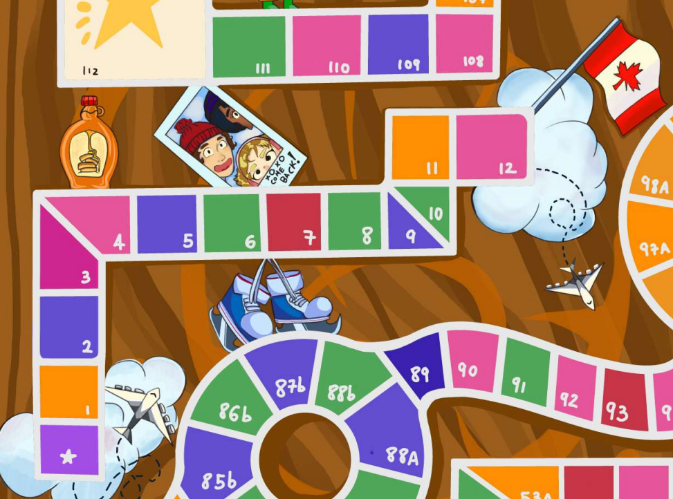
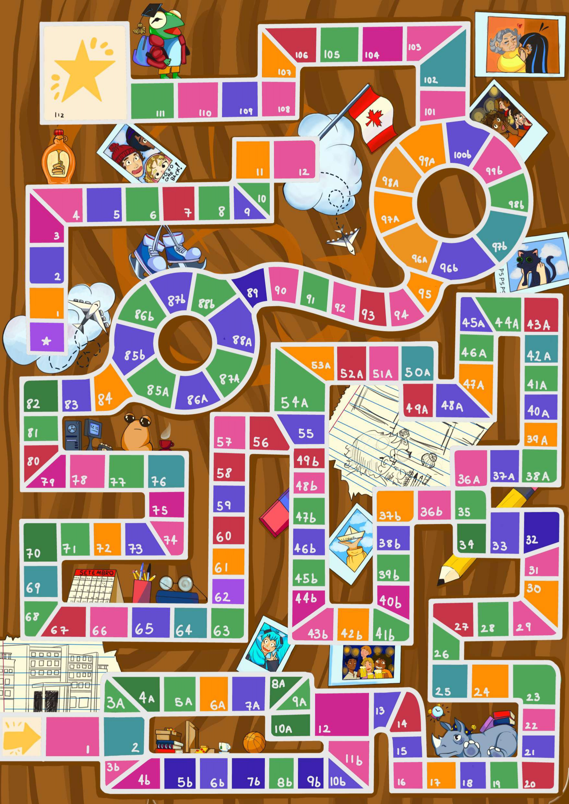

INTRODUÇÃO
Viva a vida universitária do seu jeito!
Nessa paródia de O Jogo da Vida, você passa pelo percurso de uma graduação aproveitando
tudo que ela pode te oferecer: novos amigos, novas oportunidades e muito estudo!
Para deixarmos o jogo com mais cara de faculdade, reformulamos o sistema de pontos.
Agora, há três coisas que contam para sua pontuação final. Os pesos de cada uma
dependem de qual caminho você deseja trilhar no início do seu curso:
Caminho A: foco no dinheiro e na carreira profissional!
Mais chances de ter fontes de renda muito boas!
Pesos: pd = 5 / po = 2 / pn = 3
Caminho B: foco em extracurriculares e socialização!
Mais chances de entrar em um grupo!
Pesos: pd = 1,5 / po = 3,5 / pn = 5
As outras bifurcações do jogo não alteram a estrutura e o andamento do jogo.
TIPOS DE PONTOS
Dinheiro: você sabe o que é isso! Dinheiro é obtido em alguns espaços do tabuleiro
e toda vez que você passa (não precisa parar!) por um espaço de remuneração, nos quais
o dinheiro recebido depende de sua fonte de renda. Se você chegar ao fim da primeira
bifurcação do tabuleiro sem uma fonte de renda, você automaticamente recebe uma
bolsa-auxílio para receber 500 toda vez que passar por um espaço de remuneração. Se você
perder sua fonte de renda você passará a receber uma bolsa-auxílio, que nunca pode ser perdida.
Pontos de oportunidades: representam o quanto você foi atrás de atividades além da graduação.
Eles são obtidos ao entrar em um grupo, classe geral de atividades extracurriculares. Além dos
20 pontos ao entrar, um grupo dá pontos para cada espaço avançado enquanto você estiver nele
e também um dado especial ligado a ele, que você pode usar a qualquer momento ao invés
do dado normal! Se você trocar de grupo, você também recebe os pontos de entrada,
mas seu dado especial é trocado.
Pontos de networking: indicam sua socialização e construção de relacionamentos durante
seu curso. Você consegue esses pontos em espaços ao longo do tabuleiro.
Atenção: uma fonte de renda e um grupo
só podem ser ocupados por um jogador por vez!
O jogo é jogado com dados, sendo o normal o 1d10. Você pode obter mais dados
estando em um grupo por meio da Lojinha do Destino, uma loja em que você pode
comprar dados especiais (de uso único) para mudar seu destino!
Esses dados são mais caros e ao final do jogo eles não valem nada.
Além disso, um jogador só pode ter um dado comprado por vez.
Há vários tipos de espaços no tabuleiro. Alguns são de dinheiro, outros de
remuneração, outros de oportunidades, outros de networking...
Alguns são de estudo, que são importantes para abrir algumas portas para o jogador!
Ao fim do jogo, você terá
d quantia de dinheiro,
o pontos de oportunidades e
n pontos de networking,
que serão usadas para calcular sua pontuação final P.
$$P = \frac{\frac{d}{1000} p_d + o p_o + n p_n}{10}$$
O JOGO
Ao iniciar o jogo, você deve inserir os nomes dos jogadores separados por vírgula como no formato Ana, Beto, Carlos.
Inserir o nome de um ou nenhum jogador não inicia o jogo.
Após inserir os nomes, aparecerá a tela principal do jogo.
No canto superior direito, há um campo que mostra a última ação do jogo.
Abaixo disso, está a Lojinha do Destino com seus os dados disponíveis.
No canto inferior direito, há os ícones dos jogadores, seus nomes e suas informações.
Na vez de um jogador, ele pode efetuar as seguintes ações usando teclas do teclado:
[1] Rolar um 1d10
[2] Rolar o dado especial de seu grupo
[3] Rolar o dado comprado da Lojinha do Destino
[L] Consultar a Lojinha do Destino ==> (No terminal) [1-5] Comprar um dado da loja / [0] Sair da loja
[M] Abrir o manual do jogo no navegador (que você está lendo agora!)
Após o movimento, geralmente será feita a ação do espaço em que o jogador para automaticamente, com algumas exceções.
Em algumas ocasiões, o jogador deve escolher a bifurcação que ele quer seguir usando o terminal.
Alguns espaços pedem para que o jogador escolha um adversário, o que pode ser feito com as teclas de número.
Já outros pedem para rolar um dado novamente, e isso acontece após uma confirmação pelo jogador usando qualquer tecla.
Há outras exceções mais específicas de cada espaço.
O jogo para quando todos os jogadores se formarem. Então, é salvo um arquivo .txt em seu dispositivo com as informações do jogo, como
- data e hora do jogo
- classificação final dos jogadores
- divisão de pontos
- fontes de renda e grupos finais

Há também uma parte isolada no tabuleiro, o intercâmbio!
Ele pode ser acessado no espaço 62 se
o jogador tiver caído em dois espaços de estudo
e pagar 1000 pela burocracia imigratória.
O caminho do intercâmbio tem espaços muito bons!
Consulte a listagem de espaços no fim do manual.
Ganha o jogador que tiver a maior pontuação final P!
LISTAGEM DE ESPAÇOS

1 - formatura do ensino médio com 80 pessoas
2 - início das aulas; gaste 200 com materiais novos
3a - você pensa em fazer serviços como freelancer
4a - proposta de estágio no laboratório de física
5a - ganhou uma rifa da Veterinária, receba 150
6a - estudo na biblioteca
7a - surgiu a oportunidade de entrar em uma atividade estudantil
8a - proposta de emprego da empresa do seu primo de segundo grau
9a - proposta de assistência à docência de um professor da Geografia
10a - você teve uma ideia inovadora de empreendedorismo
3b - foi na recepção dos calouros do curso, conheceu 60 pessoas
4b - festa da Biologia, conversou com 25 pessoas
5b - você pensa em participar do seletivo de uma Liga Acadêmica
6b - você está pensando em entrar na Empresa Júnior do seu curso
7b - chamaram você para entrar para a Atlética do seu curso
8b - vaga de meio-período na loja do seu cunhado
9b - estão convidando calouros para entrar no Centro Acadêmico
10b - você e seus amigos tiveram uma ideia de projeto de extensão
11b - seu grupo de estudos de matemática de 15 pessoas se aproximou de você
12 - foi em algumas reuniões de um clube de livros, conheceu 25 pessoas
13 - oportunidade de entrar em uma entidade estudantil
14 - gastou 60 em filme e shopping com os amigos
15 - seu veterano convidou você a entrar na entidade estudantil dele
16 - noite de karaoke em um grupo de 30 pessoas
17 - estudo com vídeos no YouTube
18 - você pensa em participar das eleições para representante discente
19 - REMUNERAÇÃO
20 - ressaca pós-festa, perca uma rodada
21 - mais uma oportunidade de entrar em uma entidade estudantil
22 - foi em uma feira de profissões com 100 outras pessoas
23 - vendeu computador antigo e recebeu 1100
24 - fez resumos com lettering bonito
25 - escolha um jogador para rachar uma pizza de 120 com você
26 - um escritório local viu seu currículo e tem uma proposta
27 - atrasou devolução de livros da biblioteca, pague 30
28 - venceu aposta com os amigos, cada jogador te deve 10 vezes o valor de um 1d10 rodado
29 - participou de um evento de voluntariado e conheceu 30 pessoas
30 - estudou com provas anteriores
31 - pague 120 reais para ir na viagem de férias com 80 pessoas do seu curso
32 - você pode entrar de fininho em uma entidade estudantil de última hora
33 - se tiver caído em casa de estudos, você pode aceitar uma oferta de IC do seu professor
34 - prêmio de excelência estudantil, receba 2000
35 - REMUNERAÇÃO
36a - festa da Arquitetura, conheceu 45 pessoas
37a - talvez haja vaga na Empresa Júnior do seu curso
38a - ações de pequenas empresas estão em alta, receba 4000 se tiver um empreendimento
39a - estudo na monitoria de uma matéria difícil
40a - você pensa em participar do seletivo de uma Liga Acadêmica
41a - abriu uma vaga de meio-período na sua área perto de casa
42a - sua melhor amiga te chamou para fundar um empreendimento com ele
43a - pague 100 pelos custos dos materiais de uma maquete
44a - achou uma nota de 50 na rua
45a - oportunidade de estágio na empresa da sua tia-avó
46a - REMUNERAÇÃO
47a - você lotou sua parede de post-its de estudos
48a - feira das entidades estudantis,
ganhe 300 pontos de oportunidades se você estiver em uma entidade estudantil
49a - crise existencial sobre se você está fazendo o curso certo, perca uma rodada
50a - tempo com a família revigorou suas energias, role o dado de novo
51a - tempo de socialização no prédio das biológicas com 15 pessoas novas
52a - pague 300 pelos ingressos de um show que você queria muito ir
53a - você, de fato, assistiu ao documentário que o professor recomendou
54a - receba 150 por uma comissão artística a um colega
36b - foi na festa de recepção dos novos calouros, conversou com os 60 calouros
37b - pague um curso online de 150 para estudar um conteúdo de nicho
38b - o Centro Acadêmico do seu curso está chamando novos membros
39b - se tiver networking >= 150, um colega te indica para uma vaga de emprego onde ele trabalha
40b - participou de um torneio de futebol beneficente com outras 120 pessoas
41b - o pai do amigo da sua irmã tem uma proposta para você
42b - fez mapas mentais para reter conteúdo
43b - organizou uma feira de origamis em que participaram 30 pessoas
44b - festa de Halloween da Odontologia, conheceu 75 pessoas
45b - é seu aniversário! ganhe 10 de presente para cada 10 pontos de networking
46b - campeonato da Atlética (todos que estão na Atlética ganham 50 pontos de oportunidades)
47b - REMUNERAÇÃO
48b - sua performance teatral no auditório da faculdade te deu 200 seguidores nas redes sociais
49b - se não tiver estudado, você foi mal em uma prova e deve voltar até o espaço 36b para estudar mais
55 - a Atlética do seu curso abriu um time do seu esporte favorito
56 - casa do azar: rode 1d10 e se tirar 1 ou 2 você terá que sair da sua entidade estudantil
57 - desafie um jogador a uma competição de dança em uma festa; quem ganhar vai impressionar 30 pessoas
58 - gastou 150 em energéticos e cafeína
59 - te chamaram para um projeto de extensão no centro da cidade
60 - a TV da sua mãe quebrou, ajude ela a pagar emprestando 500
61 - atrasou em meia hora o fim da aula tirando dúvidas com o professor
62 - bolsa de intercâmbio no Canadá: você pode ir se tiver estudado 2x e pagar 1000 pela burocracia imigratória [==> C1]
63 - achou uma moeda de 1 no chão da biblioteca
64 - motivação súbita, role o dado de novo
65 - surgiu uma vaga de representante discente
66 - tarde de vôlei com 15 pessoas
67 - perca sua fonte de renda (se não for bolsa-auxílio)
68 - REMUNERAÇÃO
69 - promoção relâmpago na Lojinha do Destino: tudo com 50% de desconto
70 - limpe seu nome se você estiver em dívida
71 - primeiro lugar em uma meia maratona na sua faculdade, receba 700
72 - livros relatórios projetos trabalhos resumos revisões estudos estudos estudos
73 - por falta de tempo, você precisou sair da sua entidade estudantil
74 - prática de parkour com 25 pessoas
75 - foi em um churrasco feito pela Atlética com 40 pessoas
76 - emprestou anotações erradas a um jogador e ele precisou voltar 5 casas para estudar o conteúdo corretamente
77 - você está em apuros financeiros, peça 300 emprestados de um jogador
78 - foi em um giro das profissões com 30 profissionais da sua área
79 - participou da recepção dos 60 calouros do seu curso
80 - seu cachorro comeu seu relatório, perca a rodada refazendo
81 - REMUNERAÇÃO
82 - vendeu arte na praia e ganhou 180
83 - oportunidade de entrar em uma entidade estudantil
84 - virou a noite estudando
85a - proposta de estágio do sobrinho do pai do seu amigo
86a - você pensa em entrar para a Atlética do seu curso
87a - oferta de emprego em uma empresa unicórnio
88a - talvez seja legal entrar para o Centro Acadêmico do seu curso
85b - você pensa em participar do seletivo de uma Liga Acadêmica
86b - você viu o anúncio de uma vaga de meio-período perfeita para você
87b - se tiver caído em 2 casas de estudos, você pode aceitar uma oferta de IC do seu professor
88b - você pensa em fazer serviços de design como freelancer
89 - se estiver em uma entidade estudantil, vá com eles até a convenção da sua área e receba 200 pontos de oportunidades
90 - amigo de um amigo te chamou para o cinema com 10 pessoas
91 - REMUNERAÇÃO
92 - participou da organização da festa das Ciências Sociais, conheceu 100 pessoas
93 - seus cadernos e livros molharam de café, gaste 400 para repor seus materiais
94 - alguns amigos divulgaram seus desenhos nas redes sociais e eles atingiram 30 pessoas nas redes sociais
95 - revisões com os veteranos
96a - estudos reforçados com o professor
97a - pesquisa de opções de pós-graduação
98a - adiantou entregas do TCC
99a - estudos na lojinha de café em um dia chuvoso com música lo-fi
96b - se você está em uma entidade estudantil, você acaba de sair dela deixando um ótimo legado,
ganhando +250 pontos de oportunidade por isso
97b - quitou as dívidas
98b - proposta de emprego da sobrinha do seu vizinho
99b - criou um canal no YouTube que viralizou, conseguindo 1000 inscritos
100b - tente copiar os passos de uma pessoa e se destacar mais que ela:
se conseguir, ganhe 100 pontos de oportunidade da pessoa, se não, perca 100 pontos para ela
101 - apareceu no spotted e ganhou 45 seguidores nas redes sociais
102 - CASA DA CARIDADE: todos que passam por aqui deixam 200; o último jogador a passar recebe o acumulado
103 - festa da Química, conversou com 45 pessoas
104 - festa da Educação Física, conheceu 80 pessoas
105 - REMUNERAÇÃO
106 - seu orientador fez muitos comentários sobre seu TCC, perca a rodada analisando tudo
107 - estudos para últimas provas
108 - último bar com seus 15 amigos da faculdade
109 - se tiver estudado 5x, se forme com honras acadêmicas e receba +400 pontos de oportunidades acadêmicas futuras
110 - cole grau com número de pessoas igual a 10 vezes o número de um 1d10
111 - sua avó está muito orgulhosa de sua trajetória e deu 100 de presente a você
112 - FORMATURA
INTERCÂMBIO:
C0 - início do intercâmbio
C1 - estudos intensivos de inglês e francês
C2 - palestra sobre oportunidades futuras no Canadá, +1200 pontos de oportunidades
C3 - você tirou o dia para conversar com outros 100 alunos intercambistas
C4 - excursão até as Cataratas do Niágara com 50 outras pessoas
C5 - se perdeu indo para uma entrevista, perca 150 pontos de oportunidade
C6 - fez um estágio durante o inverno e recebeu 3200
C7 - você perdeu suas roupas de frio, gaste 500 com novas
C8 - sua faculdade finalmente pagou os 1200 da sua passagem aérea
C9 - enviou currículo para empresas locais, +150 pontos de oportunidade
C10 - você comeu fora muitas vezes, pague 400
C11 - estudos para provas finais do intercâmbio
C12 - festa de despedida da sua sala, conversou com 50 pessoas [==> 92]